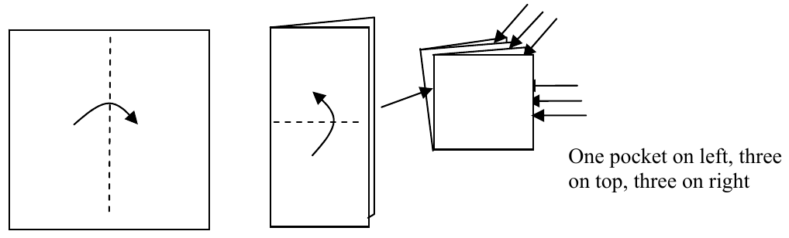
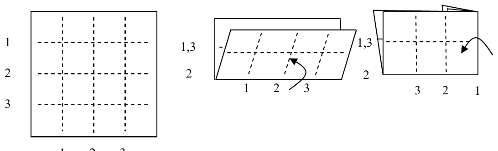

The 30th Annual ACM International Collegiate Programming Contest World Finals · Problem H
Origami, or the art of paper folding, often makes use of “pockets” of paper, particularly in complicated models made from multiple pieces of paper where a tab on one piece of paper needs to fit into a pocket in another piece of paper. In this problem you must count pockets in a flat folded square of paper. A pocket is defined as any opening (lying between two surfaces of paper) that is accessible from the boundary of the folded piece of paper. Note that one accessible opening can account for several pockets since each open side contributes one pocket. Figure 1 shows an example. Observe that the “middle” opening (between the second and third layers of paper) contributes 3 to the total pocket count.

Assume the paper is initially lying on a flat surface and is never completely lifted from the surface. All folds will be horizontal or vertical. Fold lines will fall only along equally-spaced crease lines, N in each direction. On the original unfolded square, creases and edges are numbered from top to bottom and from left to right as shown in Figure 2. Each fold reduces the boundary of the folded piece of paper to a smaller rectangle; the final fold results in a square one unit in each direction. Folds are described using a crease line and a direction. For instance, 2 U means to fold the bottom edge up using horizontal crease 2; 1 L means to fold the right edge to the left using crease 1. (See Figure 2.) After several folds, creases may be aligned (for instance, creases 1 and 3 in Figure 2). Either number may be used to specify a fold along that line (so, in Figure 2, 1 D and 3 D are equivalent instructions after the first fold). Pockets are to be counted for the boundary of the final one-unit square. Once a crease is made it cannot be undone. All creases go through every layer of paper from top to bottom; disregard paper thickness.

Input is a sequence of test cases. Each test case begins with a line containing two integers, N and K. N is the number of horizontal crease lines (the same as the number of vertical crease lines) of the square. Creases are numbered 1, 2, ..., N from top to bottom and from left to right. K is the number of folds to be made. N and K are each less than or equal to 64.
Following N and K are K fold descriptions. Each fold description consists of an integer crease number C and a direction, either U, D, L, or R (for up, down, left or right) separated by whitespace. Whitespace also precedes and follows each fold description.
The final result for each test case will be a square one unit in size.
The final test case is followed by a line containing two zeroes.
For each input case, display the case number followed by the number of pockets in the final one-unit square. Use the format shown in the sample output.
1 2 1 R 1 U 3 5 2 U 1 L 3 D 3 R 2 L 0 0
Case 1: 7 pockets Case 2: 17 pockets